Google的PageRank算法学习(2)
继续学习。
1、入链对计算页面级别的影响
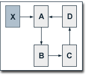 入链总是能增加当前页面的级别，尤其当前页与其下级页面构成回路时，这种贡献更大。如右图例，设ABCD各页初始级别为1，阻尼系数为0.5，PR(X)/C(X)＝10。则易算出
PR(A) = 19/3 = 6.33
PR(B) = 11/3 = 3.67
PR(C) = 7/3 = 2.33
PR(D) = 5/3 = 1.67
如果A不在回路上，则只能得0.5*10=5的收益。
阻尼系数越大，页面级别的收益越大，且整个回路上都能收到更大的收益（即入链收益更能平均地分布到各个回路页面上。针对上例，将阻尼系数改为0.75，则有
PR(A) = 419/35 = 11.97
PR(B) = 323/35 = 9.23
PR(C) = 251/35 = 7.17
PR(D) = 197/35 = 5.63
除回路上各个页面的级别值明显增大外，PR(A)/PR(D)的值敢明显减少了。
入链对整个回路上所有页面的级别值的增加之和，可以由下面这个公式得出.
(d / (1-d)) × (PR(X) / C(X))
这个公式，可以由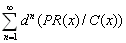简单推导出。
2、出链对计算页面级别的影响
增加出链不会影响整个web的总级别，但一个站点失去的级别值等于链到的站点的增加值之和。对于两个封闭的站点，从一个站点链上另一个站点时，增加的和减少的都是(d(/(1-d) × (PR(X) / C(X)).如果这两个站点互相链接，则此值减少。用随机冲浪模型可以解释这种现象，就是出链的增加，减少了用户访问站内页面的概率。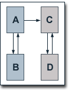举例如图，设阻尼系数为0.75，则
PR(A) = 0.25 + 0.75 PR(B)
PR(B) = 0.25 + 0.375 PR(A)
PR(C) = 0.25 + 0.75 PR(D) + 0.375 PR(A)
PR(D) = 0.25 + 0.75 PR(C)
得：
PR(A) = 14/23
PR(B) = 11/23
PR(C) = 35/23
PR(D) = 32/23
PR(A)+PR(B)=25/23
PR(C)+PR(D)=67/23
PR(A)+PR(B)+PR(C)+PR(D)=92/23=4
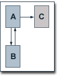 Page和Brin将这样的链接称为悬摆链，它链到页面没有出链。悬摆链对页面的级别计算产生负面影响。如例，阻尼系数为0.75.
PR(A) = 0.25 + 0.75 PR(B)
PR(B) = 0.25 + 0.375 PR(A)
PR(C) = 0.25 + 0.375 PR(A)
得：
PR(A) = 14/23
PR(B) = 11/23
PR(C) = 11/23
PR(A)+PR(B)+PR(C)=36/23<3
据Page和Brin，Google在索引页面时，悬摆链的量很大，主要是由于限制robot.txt的限制及索引了一些没有链出的文件类型如PDF等。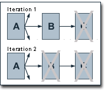为消除这种负面影响，google在计算级别时，将此类链接从数据库里去掉，在计算完毕后，再单独计算悬摆链所链到页面。由此可见，PDF类的文件还是可以放心地在网上发布的。
3、页面数量的影响
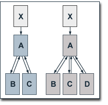 先看例子。阻尼系数为0.75,PR(X)/C(X)=10,则
PR(A) = 0.25 + 0.75 (10 + PR(B) + PR(C))
PR(B) = PR(C) = 0.25 + 0.75 (PR(A) / 2)
得：
PR(A) = 260/14
PR(B) = 101/14
PR(C) = 101/14
PR(A)+PR(B)+PR(C)=33;
增加页面D；
PR(A) = 0.25 + 0.75 (10 + PR(B) + PR(C) + PR(D))
PR(B) = PR(C) = PR(D) = 0.25 + 0.75 (PR(A) / 3)
得
PR(A) = 266/14
PR(B) = 70/14
PR(C) = 70/14
PR(D) = 70/14
PR(A)+PR(B)+PR(C)+PR(D)=34
增加页面后，所有页面的级别值之和增加了1，A页略有增加，而B、C则用大幅下降。
再看右边的例子，假定同上。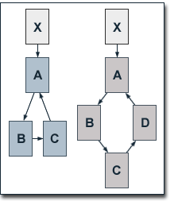
PR(A) = 0.25 + 0.75 (10 + PR(C))
PR(B) = 0.25 + 0.75 × PR(A)
PR(C) = 0.25 + 0.75 × PR(B)
得：
PR(A) = 517/37 = 13.97
PR(B) = 397/37 = 10.73
PR(C) = 307/37 = 8.30
增加页面D：
PR(A) = 0.25 + 0.75 (10 + PR(D))
PR(B) = 0.25 + 0.75 × PR(A)
PR(C) = 0.25 + 0.75 × PR(B)
PR(D) = 0.25 + 0.75 × PR(C)
得：
PR(A) = 419/35 = 11.97
PR(B) = 323/35 = 9.23
PR(C) = 251/35 = 7.17
PR(D) = 197/35 = 5.63
增加页面后，所有页面级别增加了1，但每个页面的级别值减少了，这是由于新加页面分享了入链代来的值。从这个结果看，增加页面减少了已有页面的级别值，露了google算法青睐小站点的特点。当然，大站点也会因内容丰富而吸引其它站点的出链而得以级别值增加。
3、针对搜索引擎优化的级别分布
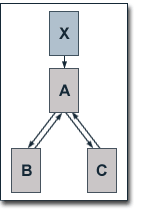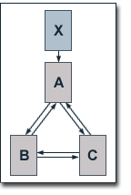 先看两个列子，阻尼系数为0.5，PR(X)/C(X)=10;
BC之间无链接时：
PR(A) = 0.5 + 0.5 (10 + PR(B) + PR (C))
PR(B) = 0.5 + 0.5 (PR(A) / 2)
PR(C) = 0.5 + 0.5 (PR(A) / 2)
得
PR(A) = 8
PR(B) = 2.5
PR(C) = 2.5
BC之间互相链接时：
PR(A) = 0.5 + 0.5 (10 + PR(B) / 2 + PR(C) / 2)
PR(B) = 0.5 + 0.5 (PR(A) / 2 + PR(C) / 2)
PR(C) = 0.5 + 0.5 (PR(A) / 2 + PR(B) / 2)
得：
PR(A) = 7
PR(B) = 3
PR(C) = 3
当BC间互链时，虽然减少了A的级别，但BC都增加了。这符合优化站点所有页面而非只主页的优化思路，因为只有每个页面的级别都提高了，当有检索词命中这些页面时，它们才能排在前面。这种优化的方法也很明显了，就是尽可能地在所有页面间平均分布入链的贡献，各低级页面要增加互链。
4、只要不影响易用性，尽可能地将所有出链集中在一个或几个低级页面中，可以有效地降低出链对页面级别计算的负面影响。看列子：阻尼系数为0.5，PR(X)/C(X)=10;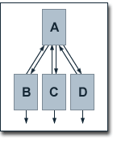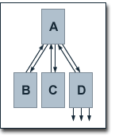
BCD都有出链时：
PR(A) = 0.5 + 0.5 (PR(B) / 2 + PR(C) / 2 + PR(D) / 2)
PR(B) = PR(C) = PR(D) = 0.5 + 0.5 (PR(A) / 3)
得：
PR(A) = 1
PR(B) = 2/3
PR(C) = 2/3
PR(D) = 2/3
出链集中于D时：
PR(A) = 0.5 + 0.5 (PR(B) + PR(C) + PR(D) / 4)
PR(B) = PR(C) = PR(D) = 0.5 + 0.5 (PR(A) / 3)
得：
PR(A) = 17/13
PR(B) = 28/39
PR(C) = 28/39
PR(D) = 28/39
从结果看，出链集中后，ABCD各页面的级别都上升了。
5、链接交换增加了实施交换的页面的级别，却减少了其它页面的级别。如图，阻尼系数为0.5，PR(X)/C(X)=10;
交换前，
PR(A) = 4/3
PR(B) = 5/6
PR(C) = 5/6
PR(D) = 4/3
PR(E) = 5/6
PR(F) = 5/6
交换后；
PR(A) = 0.5 + 0.5 (PR(B) + PR(C) + PR(D) / 3)
PR(B) = PR(C) = 0.5 + 0.5 (PR(A) / 3)
PR(D) = 0.5 + 0.5 (PR(E) + PR(F) + PR(A) / 3)
PR(E) = PR(F) = 0.5 + 0.5 (PR(D) / 3)
得
PR(A) = 3/2
PR(B) = 3/4
PR(C) = 3/4
PR(D) = 3/2
PR(E) = 3/4
PR(F) = 3/4
这情况恰好与增加站内互链的效果相反。由此，当需要对主页进行针对某一关键词的优化时，才取交换链接是可取的。
例中级别值的重新分布，更基本的前提是两个站点中参考交换的页面互相为对方提供的级别值是相等的。如果一个站的某个页面级别高或少出链，则这个站所有页面的级别会降低。这儿一个重要的影响因素是站点页面的数量。当一个站点的页面更多时，有更多的入链级别值被分布到站点的其它页面中，因而参考交换的页面不能提供更多贡献给对方。
Google的PageRank算法学习(1) Google的PageRank算法学习(3)
Posted by Hilton at August 29, 2003 11:02 AM
| TrackBack